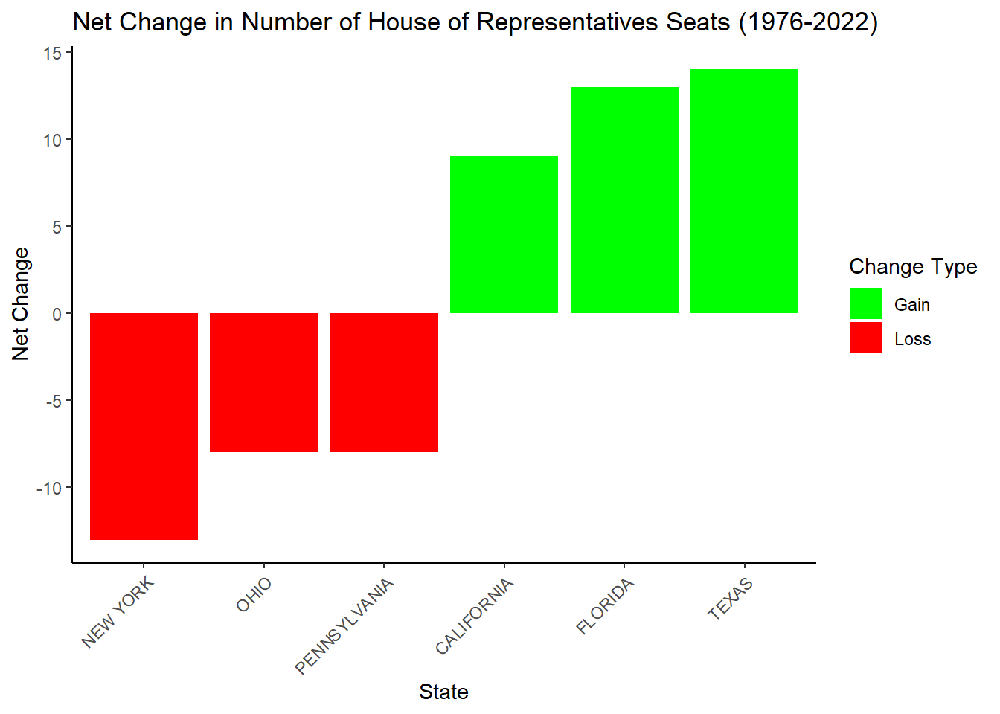
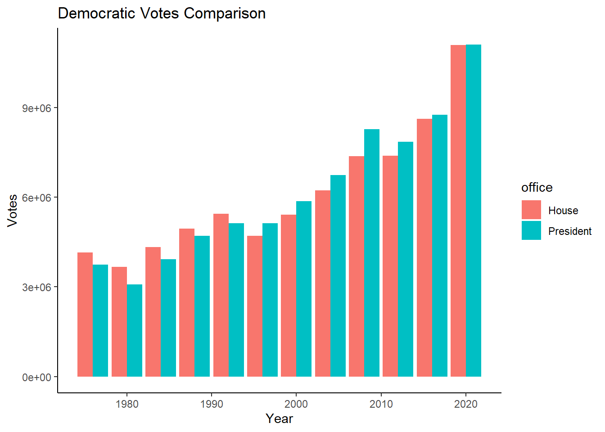
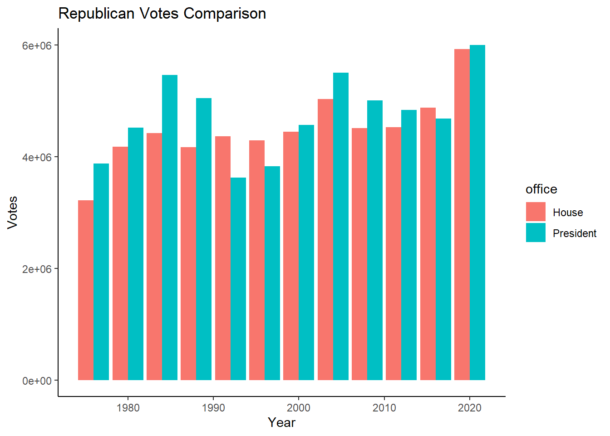
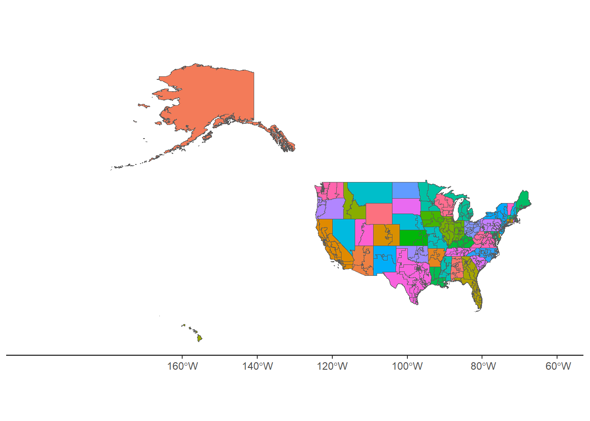

Warning: package 'tmap' was built under R version 4.4.2Mini-Project #03:
Do Proportional Electoral College Allocations Yield a More Representative Presidency?
1. Introduction
The United States is a democratic country, and therefore elections are very important. Through casting their vote, US citizens have a say on who will be their president and other political leaders. However, the system used for selecting a president since the inception of this country, the Electoral College, allows for situations in which a presidential candidate might win the election without winning the popular vote. This is because each state gets as many votes as the number of congress Senators and Representatives. Each state has at least 2 Senators despite the its population size.
Some politicians such as Sen. Elizabeth Warren (D-Mass) believe that the electoral college should be abolished. She explains that having a national vote would ensure that every vote matters equally towards selecting a president.
House member Alexandria Ocasio-Cortez argues that there is a bias favoring rural voters.
2. Data
To review the claims mentioned above, We will use data from multiple sources.
Data I: US Election Votes
We will manually download data from the MIT Election Data Science Lab, which collects votes from all biennial congressional races in all 50 states here.1 The data is from 1976 to 2022.
Furthermore, we will also manually download statewide presidential vote counts from 1976 to 2020 from here.2
Election Votes Data
house_votes <- read.csv("1976-2022-house.csv")
presidential_votes <- read.csv("1976-2020-president.csv")Data II: Congressional Boundary Files 1976 to 2012
We would like to visualize the data gathered above. Therefore, we will use the following code to automatically download and load files that will help us to visualize the data into R.
We will use shapefiles for all US congressional districts from 1789 to 2012 provided by Jeffrey B. Lewis, Brandon DeVine, Lincoln Pritcher, and Kenneth C. Martis here.
Congressional Districts Data Download
td <- tempdir()
for (i in 94:112) {
fname <- paste0("districts", formatC(i, width = 3, format = "d", flag = "0"), ".zip")
# Check if file exists, if not, download it
if (!file.exists(fname)) {
url <- paste0("https://cdmaps.polisci.ucla.edu/shp/", fname)
download.file(url, destfile = fname)
}
# Unzip and read shapefile
zip_contents <- unzip(fname, exdir = td)
shp_file <- zip_contents[grepl("shp$", zip_contents)]
sf_data <- read_sf(shp_file)
# Assign data to variable
assign(paste0("districts", formatC(i, width = 3, format = "d", flag = "0"), "_sf"), sf_data)
}Data III: Congressional Boundary Files 2014 to 2022
We will also download and load into r Congressional Boundary Files from the year 2014 to the present. The data is found under the FTP Archive here
Congressional Boundary Data Download
td <- tempdir()
for (i in 2014:2015) {
fname <- paste0("tl_", i, "_us_cd114.zip")
url <- paste0("https://www2.census.gov/geo/tiger/TIGER", i, "/CD/", fname)
if (!file.exists(fname)) {
download.file(url, destfile = fname)
zip_contents <- unzip(fname, exdir = td)
shp_file <- zip_contents[grepl("shp$", zip_contents)]
sf_data <- read_sf(shp_file)
assign(paste0("districts", formatC(i, width = 2, format = "d", flag = "0"), "_sf"), sf_data)
}
}
for (i in 2016:2017) {
fname <- paste0("tl_", i, "_us_cd115.zip")
url <- paste0("https://www2.census.gov/geo/tiger/TIGER", i, "/CD/", fname)
if (!file.exists(fname)) {
download.file(url, destfile = fname)
zip_contents <- unzip(fname, exdir = td)
shp_file <- zip_contents[grepl("shp$", zip_contents)]
sf_data <- read_sf(shp_file)
assign(paste0("districts", formatC(i, width = 2, format = "d", flag = "0"), "_sf"), sf_data)
}
}
for (i in 2018:2022) {
fname <- paste0("tl_", i, "_us_cd116.zip")
url <- paste0("https://www2.census.gov/geo/tiger/TIGER", i, "/CD/", fname)
if (!file.exists(fname)) {
download.file(url, destfile = fname)
zip_contents <- unzip(fname, exdir = td)
shp_file <- zip_contents[grepl("shp$", zip_contents)]
sf_data <- read_sf(shp_file)
assign(paste0("districts", formatC(i, width = 2, format = "d", flag = "0"), "_sf"), sf_data)
}
}3. Initial Exploration of Vote Count Data
We will start to analyze the data by finding which states have gained and lost the most seats in the US House of Representatives between 1976 and 2022. This will help us see the impact over time of voting power gained and lost by those states. This is because the number of electoral votes, which count towards presidential elections, is 2 (number of senators for each state), plus the number of House Representatives (indicated by the number of congressional districts).
Data Exploration
house_seats_1976_2022 <- house_votes |>
filter(year %in% c(1976, 2022))
district_count <- house_seats_1976_2022 |>
group_by(year, state) |>
distinct(district, .keep_all = TRUE) |>
summarise(count = n()) |>
ungroup() |>
arrange(year, desc(count))
net_change <- district_count |>
pivot_wider(names_from = "year", values_from = "count") |>
mutate(net_change = `2022` - `1976`)
top_3_gains <- net_change |>
arrange(desc(net_change)) |>
head(3)
bottom_3_losses <- net_change |>
arrange(net_change) |>
head(3)
net_change <- rbind(top_3_gains, bottom_3_losses)
ggplot(net_change, aes(x = reorder(state, net_change), y = net_change, fill = ifelse(net_change > 0, "Gain", "Loss"))) +
geom_bar(stat = "identity") +
labs(title = "Net Change in Number of House of Representatives Seats (1976-2022)",
x = "State", y = "Net Change", fill = "Change Type") +
theme_classic() +
theme(axis.text.x = element_text(angle = 45, hjust = 1)) +
scale_fill_manual(values = c("green", "red"))
As we seen in the graph above, Over the years 1976 to 2022, Texas has been the state that has gained the most House of Representative seats, and therefore has gained the most electoral votes. While New York has lost the most electoral votes.
Now, as part of the data exploration, we will check whether there are seat elections that could have been influence by certain details on the ballot. For example, candidates in New York can be listed under many different political parties. Let’s check elections in 2020 to see if there are any candidates meeting this criteria.
Congressional Candidate Table
house_votes |>
filter(state == "NEW YORK", year == 2020, !candidate %in% c("WRITEIN", "VOID", "UNDERVOTES")) |>
group_by(year, candidate) |>
summarise(count = n()) |>
filter(count > 1) |>
arrange(desc(count)) |>
head(1) |>
datatable()As we see above, Andrew Garbarino was running as part of many political parties. The details are as follows:
Congressional Candidate: Political Parties
house_votes |>
filter(state == "NEW YORK", year == 2020, candidate == "ANDREW R GARBARINO") |>
select(-state, -state_cen,-state_fips,-state_ic,-runoff,-special,-writein,-mode,-unofficial,-version,-fusion_ticket) |>
datatable()We can see below that Mr. Garbarino has the majority of the individual candidate votes.
Congressional Candidates: NY 2020 | District 2
house_votes |>
filter(state == "NEW YORK", year == 2020, district == "2", !candidate %in% c("WRITEIN", "VOID", "UNDERVOTES")) |>
select(-state, -state_cen,-state_fips,-state_ic,-runoff,-special,-writein,-mode,-unofficial,-version,-fusion_ticket) |>
arrange(desc(totalvotes)) |>
datatable()Now, let’s put all of the the votes together.
Congressional Candidates: NY 2020 | District 2 | Fusion of votes
house_votes |>
filter(state == "NEW YORK", year == 2020, district == "2", !candidate %in% c("WRITEIN", "VOID", "UNDERVOTES")) |>
select(-state, -state_cen,-state_fips,-state_ic,-runoff,-special,-writein,-mode,-unofficial,-version,-fusion_ticket) |>
group_by(candidate) |>
summarise(total_candidate_votes = sum(candidatevotes)) |>
arrange(desc(total_candidate_votes)) |>
datatable()We saw that the margin of gain when looking only at candidate votes was very small. Therefore, it is very important we take into consideration the fact that some candidates might have votes under many different parties. In this case, the winner was the same in both scenarios, but we see the potential for a mistake if the votes are not combined.
Now, lets compare vote count between presidential candidates and congressional candidates. There are two major political parties in the US. Therefore, we will look only at these two.
For the Democratic party, we see that starting from the year 1996, the total votes for the presidential candidate have been higher than the total votes for all congressional candidates of the same party.
Congressional Candidates vs Congressional Candidates Democrat
# Summarize votes
presidential_votes_summarized <- presidential_votes |>
select(year, state, state_po, state_cen, office, candidate, candidatevotes, totalvotes, party_simplified) |>
rename(party = party_simplified)
house_votes_summarized <- house_votes |>
select(year, state, state_po, state_cen, office, candidate, candidatevotes, totalvotes, party)
# Combine votes
combined_votes <- bind_rows(presidential_votes_summarized, house_votes_summarized) |>
filter(year %% 4 == 0) |>
group_by(year, state, office, party) |>
summarise(sum(candidatevotes)) |>
ungroup()
# Filter Democratic votes
democratic_votes <- combined_votes |>
filter(party == "DEMOCRAT")
democratic_presidential_votes <- democratic_votes |>
filter(office == "US PRESIDENT")
democratic_house_votes <- democratic_votes |>
filter(office == "US HOUSE")
# Calculate vote difference
vote_difference <- democratic_presidential_votes$`sum(candidatevotes)` - democratic_house_votes$`sum(candidatevotes)`
# Prepare data for plotting
plot_data <- rbind(
democratic_presidential_votes %>% mutate(office = "President"),
democratic_house_votes %>% mutate(office = "House")
)
# Plot comparison
ggplot(data = plot_data, aes(x = year, y = `sum(candidatevotes)`, fill = office)) +
geom_col(position = position_dodge()) +
labs(title = "Democratic Votes Comparison") +
theme_classic() +
labs(y = "Votes", x = "Year")
For the Republican party, we see that the total votes for the presidential candidate have been higher than the total votes for all congressional candidates of the same party for all years except for three of them: 1992, 1996, and 2016.
Congressional Candidates vs Congressional Candidates Republican
# Summarize votes
presidential_votes_summarized <- presidential_votes |>
select(year, state, state_po, state_cen, office, candidate, candidatevotes, totalvotes, party_simplified) |>
rename(party = party_simplified)
house_votes_summarized <- house_votes |>
select(year, state, state_po, state_cen, office, candidate, candidatevotes, totalvotes, party)
# Combine votes
combined_votes <- bind_rows(presidential_votes_summarized, house_votes_summarized) |>
filter(year %% 4 == 0) |>
group_by(year, state, office, party) |>
summarise(sum(candidatevotes)) |>
ungroup()
# Filter Republican votes
republican_votes <- combined_votes |>
filter(party == "REPUBLICAN")
republican_presidential_votes <- republican_votes |>
filter(office == "US PRESIDENT")
republican_house_votes <- republican_votes |>
filter(office == "US HOUSE")
# Calculate vote difference
vote_difference <- republican_presidential_votes$`sum(candidatevotes)` - republican_house_votes$`sum(candidatevotes)`
# Prepare data for plotting
plot_data <- rbind(
republican_presidential_votes %>% mutate(office = "President"),
republican_house_votes %>% mutate(office = "House")
)
# Plot comparison
ggplot(data = plot_data, aes(x = year, y = `sum(candidatevotes)`, fill = office)) +
geom_col(position = position_dodge()) +
labs(title = "Republican Votes Comparison") +
theme_classic() +
labs(y = "Votes", x = "Year")
4. Visualization of the 2000 Presidential Election Electoral College Results
Let us visualize the 2000 Presidential Election Electoral College Results. First, I would like to share the map of the US. Here, we can clearly see each state filled in different colors. Also, within each state we can see the congressional districts. This is important, because the more congressional districts a state has, the more electoral votes it gets.
Map of US States and Congressional Districts
#106th congress dates are January 6, 1999 to December 15, 2000
#Plot with congressional divisions
ggplot(
districts106_sf,
aes(geometry = geometry, fill = STATENAME)) +
geom_sf() +
theme_classic() +
coord_sf(xlim = c(-200, -60)) +
theme(legend.position = "none")
Footnotes
Citation: MIT Election Data and Science Lab, 2017, “U.S. House 1976–2022”, https://doi.org/10.7910/DVN/IG0UN2, Harvard Dataverse, V13; 1976-2022-house.tab [fileName], UNF:6:Ky5FkettbvohjTSN/IVldA== [fileUNF]↩︎
Citation: MIT Election Data and Science Lab, 2017, “U.S. President 1976–2020”, https://doi.org/10.7910/DVN/42MVDX, Harvard Dataverse, V8; 1976-2020-president.tab [fileName], UNF:6:a2yzwWNbv+Eff8aqVmkZKA== [fileUNF]↩︎